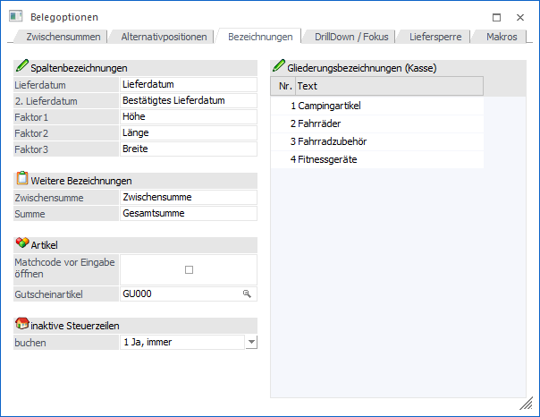

In dem Register "Bezeichnungen" können u.a. die Faktorfelder mit einer individuellen Bezeichnung versehen werden.

Ø Spaltenbezeichnungen
In diesem Bereich können die Bezeichnungen der Belegmittelteilspalten "Lieferdatum", "2. Lieferdatum" sowie "Faktor1 bis 3" definiert werden.
Ø Weitere Bezeichnungen
Die Felder "Zwischensumme" und "Summe" können hier vorbelegt werden. Der Text, der in diesen Feldern abgespeichert wird, erscheint automatisch im "Belege erfassen", wenn der Belegzeilen-Typ 4 bzw. 5 ausgewählt wird.
Ø Matchcode vor Eingabe öffnen
Wenn diese Option aktiviert ist, so wird im Belegerfassen in jeder neuen Zeile der Artikelmatchcode geöffnet, sobald der Fokus in die Spalte "Artikelnummer" gestellt wird.
Ø Gutscheinartikel
Sollte bei einer Rechnung ein Gutschein zur Bezahlung verwendet werden, so kann es sein, dass der Gutscheinbetrag den Rechnungsbetrag übersteigt. In solch einem Fall wird ein automatischer Folgegutschein generiert und der hier hinterlegte Artikel zur Erstellung verwendet.
Ø inaktive Steuerzeilen
Sollten inaktive Steuerzeilen in einem Beleg (Rechnung) enthalten sein, kann hier eingestellt werden, ob die Rechnung ausgegeben werden kann. Diese Einstellung ist benutzerspezifisch und es stehen die folgenden Optionen zur Verfügung:
ü 0 - Ja
Wenn eine Rechnung mit
einer inaktiven Steuerzeile im Belegerfassen gedruckt wird, wird gefragt, ob sie
trotzdem gedruckt werden soll. Der Fokus in der Meldung ist dabei auf "Ja". Wenn
der Beleg im Stapeldruck gedruckt oder storniert wird, wird die Option "Ja,
immer" angenommen.
ü 1 - Ja, immer
Wenn eine
Rechnung mit einer inaktiven Steuerzeile gedruckt wird, erfolgt der Ausdruck
ohne Meldung (Standardeinstellung).
ü 2 - Nein
Wenn eine Rechnung mit
einer inaktiven Steuerzeile im Belegerfassen gedruckt wird, wird gefragt, ob sie
trotzdem gedruckt werden soll. Der Fokus in der Meldung ist dabei auf "Nein".
Wenn nein gewählt wird, wird eine Meldung ins Audit geschrieben. Wenn der Beleg
im Stapeldruck gedruckt oder storniert wird, wird die Option "Nein, nie"
angenommen.
ü 3 - Nein, nie
Wenn eine
Rechnung mit einer inaktiven Steuerzeile gedruckt wird, wird sie nie gedruckt.
Dabei wird eine Meldung ins Audit geschrieben.
Ø Gliederungsbezeichnungen (Kasse)
In dieser Tabelle können 10 Texte hinterlegt werden, welche mit der Funktion "Gliederung" bzw. "Packlistendruck" im Kassendashboard abgerufen werden können (nähere Informationen entnehmen Sie bitte dem Handbuch der WinLine Kasse).